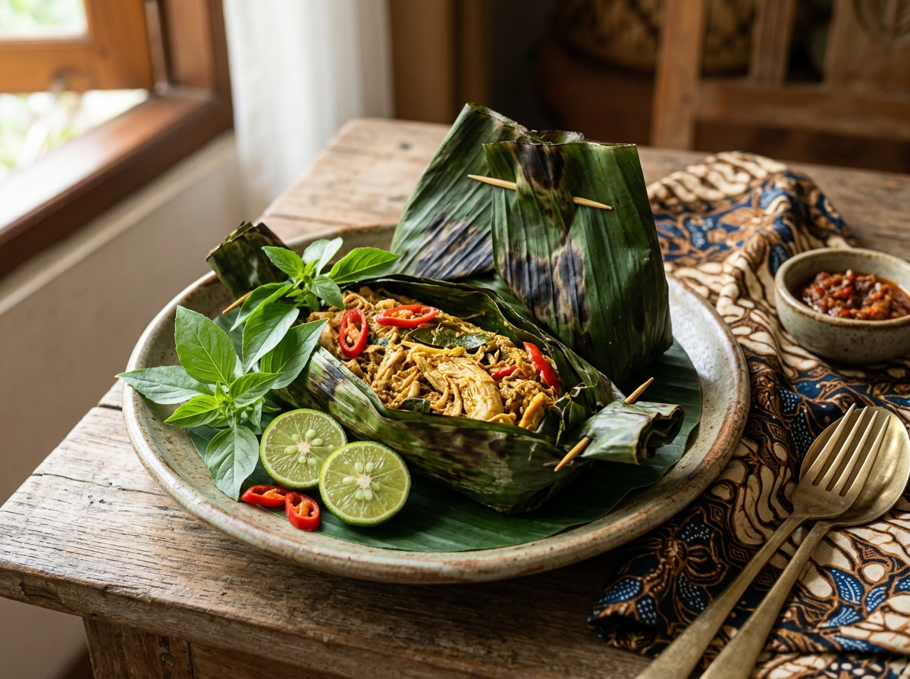

REKOMENDASI MAKAN SIANG

Pepes Ayam
Rekomendasi resep dari NutLens. Perpaduan sempurna antara protein tanpa lemak dan rempah-rempah kaya antioksidan, diolah tanpa minyak melalui metode kukus untuk menjaga nutrisi tetap utuh, dan memberikan energi yang stabil.
310 kkal
25 Menit
1 Porsi
Lihat Koleksi Resep